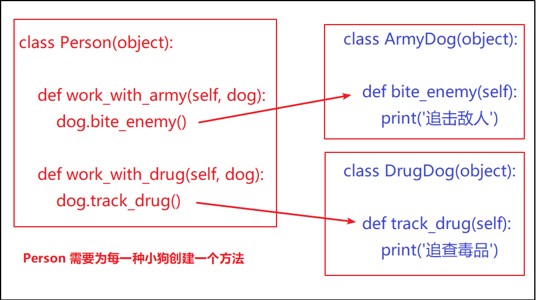
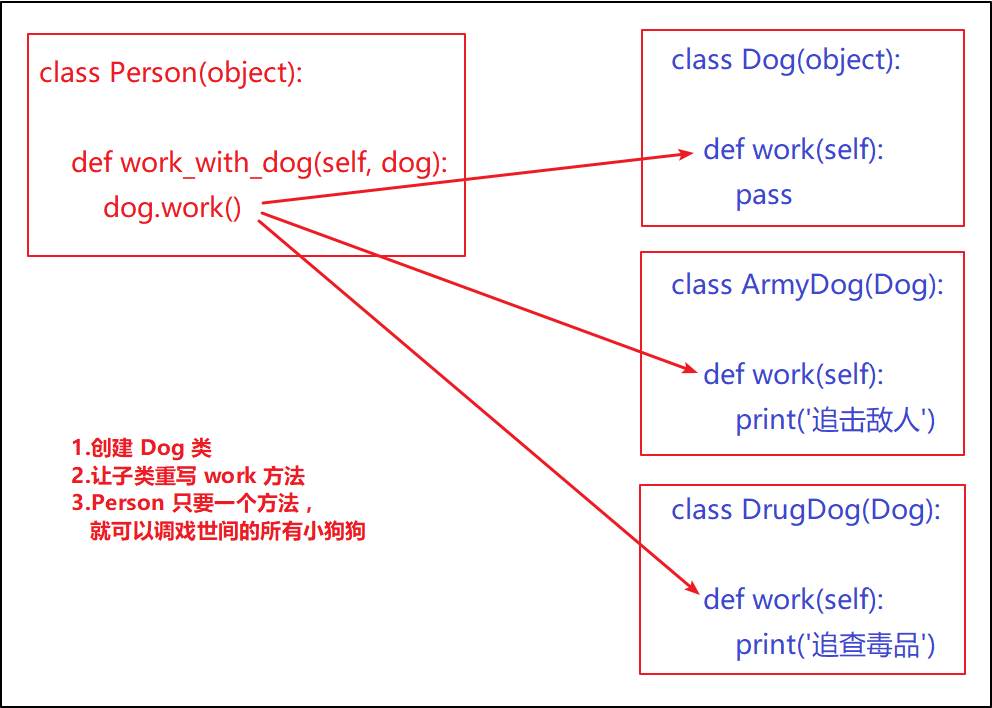

多态
面向对象三大特性
- 封装 , 这是定义类的 准则，单个类
- 根据 职责 将 属性 和 方法 封装 到一个抽象的 类 中，
- 继承 , 这是设计类的 技巧，父与子
- 主要体现是实现代码的 重用，相同的代码不需要重复的编写
- 子类可以在父类功能上进行重写，扩展类的功能
- 多态, 不同的 子类对象调用 相同的 父类方法，产生 不同的 执行结果，可以增加代码的外部 调用灵活度，
- 多态以 继承 和 重写 父类方法 为前提
- 多态是调用方法的技巧，不会影响到类的内部设计
应用场景
提供三个类，缉毒犬，军犬，人
缉毒犬 -- > 追查毒品，军犬 --> 攻击假人，人-->让小狗狗干活,
分别设计类，完成需求
图示如下

代码实现
- 两种狗的行为不一样，人需要两个不同的方法来调用
class ArmyDog(object):
def bite_enemy(self):
print('追击敌人')
class DrugDog(object):
def track_drug(self):
print('追查毒品')
class Person(object):
def work_with_army(self, dog):
dog.bite_enemy()
def work_with_drug(self, dog):
dog.track_drug()
ad = ArmyDog()
dd = DrugDog()
p = Person()
p.work_with_army(ad)
p.work_with_drug(dd)
- 此时如果再多一种小狗，则又需要在 Person 类添加新的方法
class XiaoTianDog(object):
def eat_moon(self):
print('哮天犬把月亮吃了')
class Person(object):
def work_with_xiaotian(self, dog): # 添加方法
dog.eat_moon()
Person 类总是改来改去的，实在太麻烦了
- 最好是提供一个父类 Dog，具备 work 的功能，其他小狗继承它，这样只要是小狗类，则行为被统一起来了，我们人类完全可以保证，只要是小狗的子类，找它干活肯定不会有问题。
- 这样人只要一个方法就能逗任意种类的狗玩，哪怕是添加新的狗，人的类都不需要修改。
- 图示如下：

class Dog(object):
def work(self): # 父类提供统一的方法，哪怕是空方法
pass
class ArmyDog(Dog): # 继承 Dog
def work(self): # 子类重写方法，并且处理自己的行为
print('追击敌人')
class DrugDog(Dog):
def work(self):
print('追查毒品')
class Person(object):
def work_with_dog(self, dog):
dog.work() # 使用小狗可以根据对象的不同而产生不同的运行效果, 保障了代码的稳定性
# 子类对象可以当作父类来使用
dog = Dog()
print(isinstance(dog, Dog)) # isinstance 可以判断 dog 是否是 Dog 类的对象
ad = ArmyDog()
print(isinstance(ad, Dog))
dd = DrugDog()
print(isinstance(dd, Dog))
p = Person()
p.work_with_dog(dog)
p.work_with_dog(ad) # 同一个方法，只要是 Dog 的子类就可以传递，提供了代码的灵活性
p.work_with_dog(dd) # 并且传递不同对象，最终 work_with_dog 产生了不同的执行效果
最终效果
- Person 类中只需要调用 Dog 对象 work() 方法，而不关心具体是 什么狗
- work() 方法是在 Dog 父类中定义的，子类重写并处理不同方式的实现
- 在程序执行时，传入不同的 Dog 对象作为实参，就会产生不同的执行效果
多态总结
- 定义：多态是一种使用对象的方式，子类重写父类方法，调用不同子类对象的相同父类方法，可以产生不同的执行结果
- 好处：调用灵活，有了多态，更容易编写出通用的代码，做出通用的编程，以适应需求的不断变化！
- 实现步骤：
- 定义父类，并提供公共方法
- 定义子类，并重写父类方法
- 传递子类对象给调用者，可以看到不同子类执行效果不同